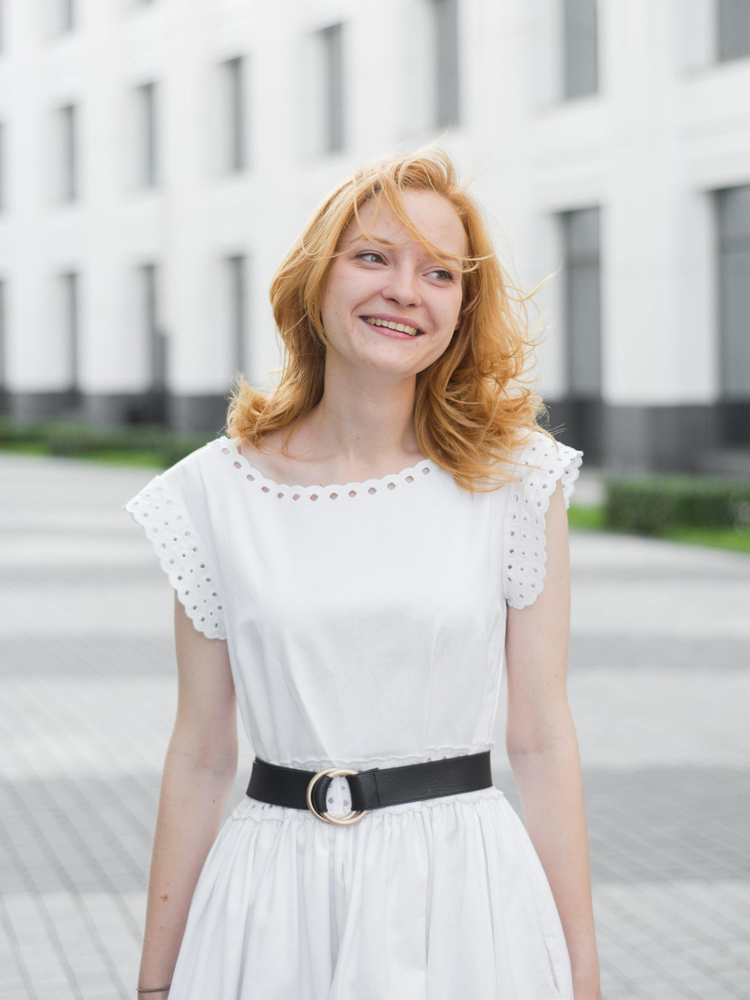
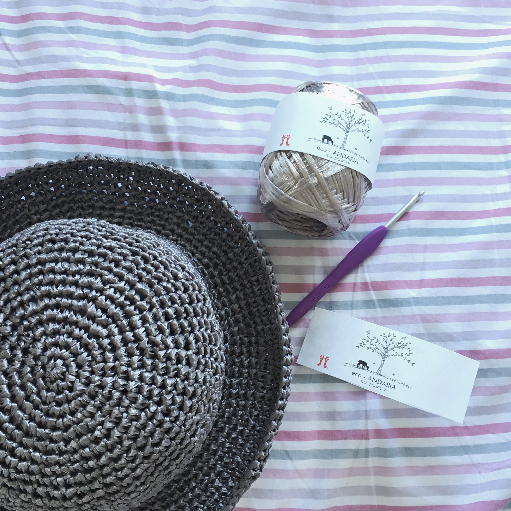
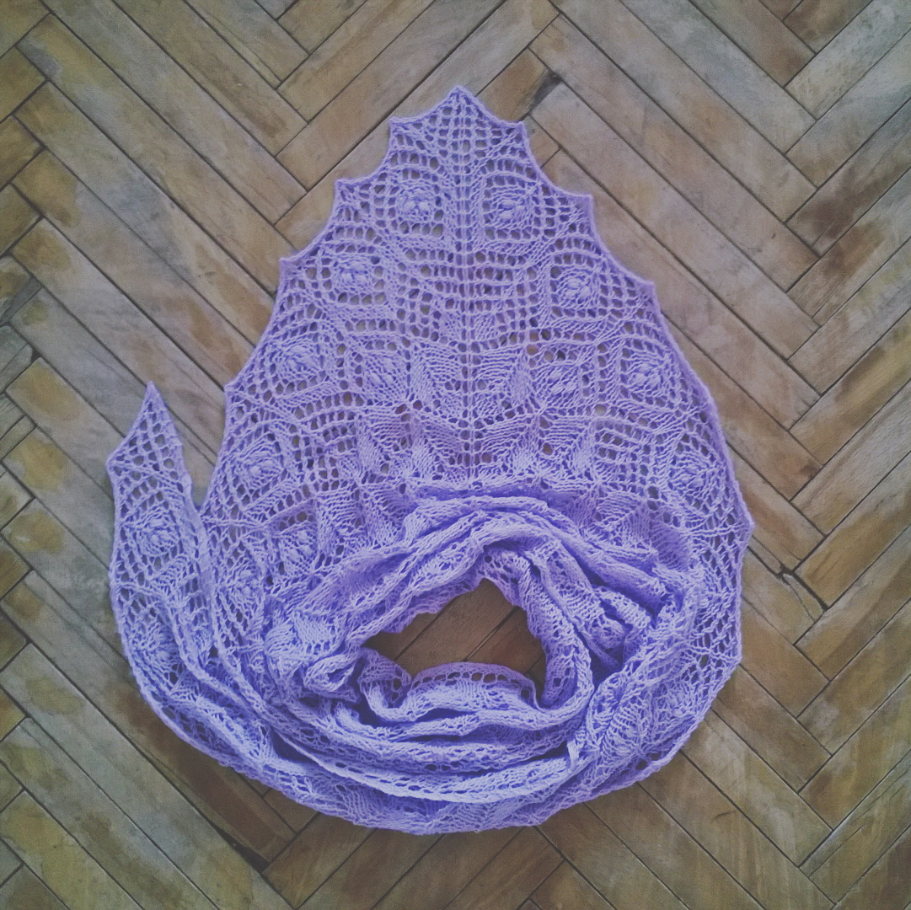
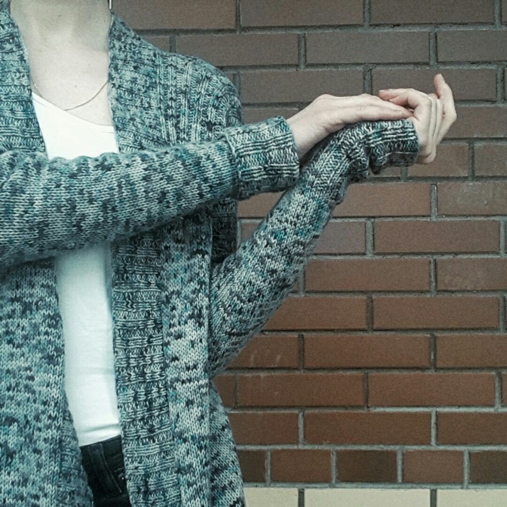
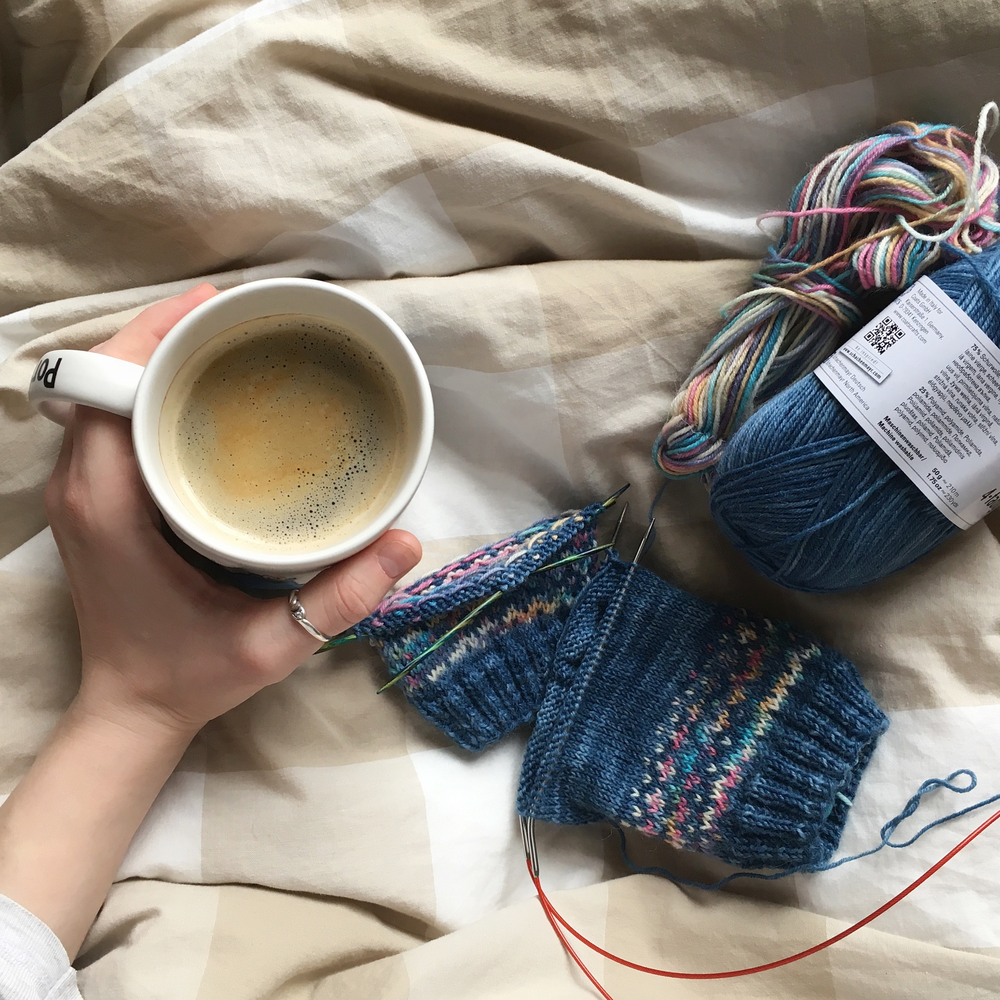

Привет! Меня зовут Саша
Мне 24 года и я живу в Москве. Люблю пить кофе и вязать. Здесь вы найдете мои контактные данные и основную информацию обо мне.Моя работа
В общей сложности мой стаж насчитывает уже более 6-ти лет. Начинала свою трудовую деятельность с должности делопроизводителя. Моя первая работа научила меня упорству, скурпулезности и отвественности, познакомила с огромным количеством соверщенно разных людей. Сейчас я работаю в проектом офисе. Звучит немного скучно, но на деле моя работа помогает запускать ракеты с космодрома "Восточный".Образование
В 2016 году я получила диплом бакалавра университета "Синергия" по специальности проектный менеджмент. Вот уже более 7-ми лет у меня на полке пылится золотая медаль (если у Вас есть хоть какая-то информация как она может пригодиться в жизни, пожалуйста, напишите мне). Но я не останавливаюсь на достигнутом и вот! - Закончен курс в Moscow Coding School.Мое хобби
Почти все свое свободное время я посвящаю вязанию. Ниже мои любимые проекты и описания к ним.|  | Шляпа ключком из рафии Рафия - это пальмовое растение с самыми большими листьями! Жители Мадагаскара плетут из ее листьев различные предметы для дома и шляпы. Конечно, я вязала эту шляпу из специально обрабанной рафии, предназначенной для вязания крючком. и это было очень странно. По первому ущению она похожа на порезанный полосочками пакет и смешно шуршит :) Зато хорошо держит форму! |
|  |
Хлопковая шаль для бабушки. Бабушки и шали - понятия для меня неразделимые. И вот она! Легкая, мягкая, с нежным рисунком, который подчеркивает пастельный цвет и как бы намекает, что девочки они всегда остаются девочками, даже если у них есть внучки ;) |
|  |
Кардиган для сестры. Связан из мериноса ручной окраски. 100% уникальности! Вложила в него все свои нежные чувства. Чтобы согревало в прямом и переноском смысле :) |
|  |
Носки. Я очень люблю вязать носки! Добавляю в них разноцветные узоры, ажуры или делаю что-то совсем простое. Дарю, складирую и ношу в сымые суровые зимы или прохладные вечера. |